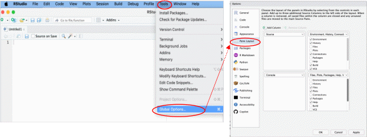

Usando RStudio: ¡Una guía (muy) breve!
Ahora que tienes tanto R como RStudio instalados en tu computadora, puedes comenzar a usar e interactuar con R abriendo el programa RStudio. Abre RStudio como lo harías con cualquier otro programa, haciendo clic en su ícono (si creaste un acceso directo en el escritorio) o buscando “RStudio” en el Menú de programas instalados (en Windows, esto sería el Menú de Inicio).
Disposición
RStudio tiene cuatro paneles principales, cada uno en un cuadrante de tu pantalla. Puedes configurar qué aparece en cada panel (a través del menú Herramientas → Opciones en Windows, RStudio/Preferencias en MacOS, y Herramientas → Opciones globales en Linux (Linux Mint)), pero la configuración predeterminada muestra:
Consola(abajo a la izquierda)Editor de
Código fuente(arriba a la izquierda)Entorno, Historial, Conexiones, etc. (arriba a la derecha), y
Gráficos, Archivos, Paquetes, Ayuda, Visor, etc. (abajo a la derecha).

Cada panel se puede minimizar o maximizar dentro de su columna haciendo clic en los botones de minimizar/maximizar. También puedes ver si un panel está colapsado (y no es visible) de esta manera.
Personalización de la Disposición
Puedes cambiar la disposición de los paneles y su organización a algo que prefieras modificando esta configuración en Herramientas → Opciones globales → Disposición de paneles (Linux Mint).
¿El tema claro predeterminado de RStudio te quema la vista? También puedes cambiar:
El tema de RStudio
La fuente y el tamaño del editor, y
El tema del editor
en Herramientas → Opciones globales → Apariencia.
{kind=link}